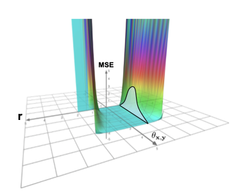
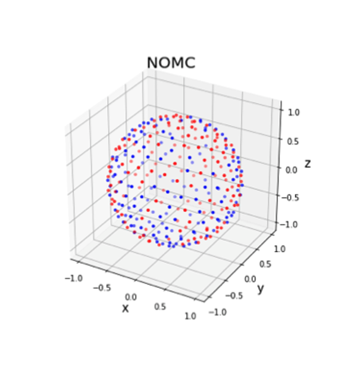

Haoxian Chen
Short Bio
I am a fourth-year Ph.D. candidate in the Department of Industrial Engineering & Operations Research at Columbia University, fortunately advised by Prof. Henry Lam and Prof. Wenpin Tang. Piror to that, I earned my master’s degree in Operations Research from Columbia and bachelor’s degree in Applied Mathematics from UCLA.
My research interests primarily lie in (i) generative models, including large language models (LLMs) and diffusion models, with a focus on RLHF; and (ii) efficient uncertainty quantification. I am also interested in designing efficient machine learning algorithms with theoretical guarantees. Previously, I worked on efficient transformers and random features with Prof. Krzysztof Choromanski.
News
- [Dec., 2024] 🚀 Exciting News! A research paper from my Summer 2024 internship at Morgan Stanley, where I explored using machine learning to enhance Monte Carlo, has been published. Check it out here.
- [Nov. 16th, 2024] We are presenting MallowsPO at NeurIPS 2024 Pluralistic Alignment Workshop.
- [Oct., 2024] A short version of our recent paper MallowsPO is accepted by NeurIPS 2024 Pluralistic Alignment Workshop.
- [Jun., 2023] Present my paper on PseudoBO in RL4SN workshop.
- [Jun., 2024] Start my internship as an ML PhD intern at Morgan Stanley, Machine Learning Research.
- [Jun., 2023] Start my internship as an Applied Scientist intern at Amazon, SCOT Forecasting.
- [Dec., 2022] I am awarded 2023 Amazon CAIT Fellowship.
Selected Publications
[
Google Scholar
]
-
 Arxiv (short version accepted at NeurIPS 2024 Pluralistic Alignment)
Arxiv (short version accepted at NeurIPS 2024 Pluralistic Alignment) -

-
